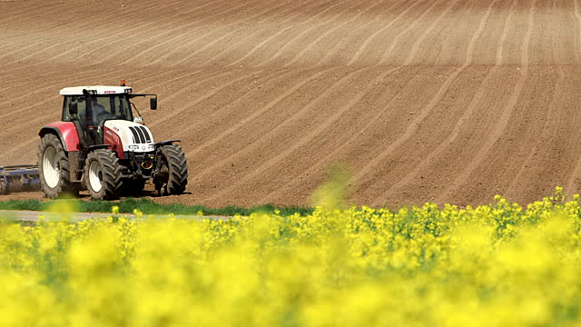

HOME
GREEN WEEDS
WET WEEDS
DRY WEEDS
ALL WEEDS
NON-AGRICULTURAL
1 / 3

Caption Text
2 / 3
Caption Two
3 / 3
Caption Three
NON-AGRICULTURAL WEEDS
A:
Abutilon hirtum
Abutilon indicum
Acanthospremum hispidum
Achyranthes aspera
Aerva lanata
Aerva tomentosa
Alternanthera pungens Syn: A. echinata
Alysicarpus rugosus
Amaranthus viridis
Amaranthus spinosus
Andrographis paniculata
Anisomeles malabarica
Argemone mexicana
B:
Barleria montana
Bidens pilosa
Blepharis maderapatensis
Boerhaavia diffusa
C:
Calotropis gigantean
Calotropis procera
Cassia auriculata
Cassia nigricans
Cassia occidentalis
Chenopodium ambrosioides
Chenopodium giganteum
Clitoria ternatea
Coccinia indica
Conyza ambigua
Corchorus trilocularis
Crotolaria pallida
Crotoloria verrucosa
Croton bonplandianum Syn: C. sparsiflorus
Cyanotis cristata
Cystisus scoparius
D:
Datura fatuosa Syn. Datura metal
Desmodium diffusum
Desmodium triflorum
C:
Dichrocephala chrysanthemifolia
E:
Ecbolium viride
Erigeron asteroids
Erigeron mucronatus
Euphorbia prostrata
Euphorbia pulcherima
Evolvulus alsinoides
G:
Gendurussa vulgaris
Geniosporum tenuiflorum
H:
Halenia perrottetii
Heliotropium indicum
Hemidesmus indicus
Hibiscus vitifolius
I:
Indigofera caerulea
Indigofera trita
Ipomoea pes-tigiridis
J:
Jatropha gossypifolia
Justicia prostrata
Justicia tranquebariensis
L:
Lactuca runcinata
Lantana camera
Leptadina reticulata
Leucas hirta
M:
Melothria maderaspatna
Merremia tridentata
Mimosa pudica
Mollugo lotoides
O:
Ocimum canum
Ocimum tenuiflorum
P:
Parthenium hysterophorus
Passiflora foetida
Pedalium murex
Pergularia daemia
Plectranthus mollis
Polygala bolbothrix
Priva leptostachia
R:
Rhynchosia aurea
S:
Solanum torvum
Solanum trilobatum
Spilanthes calva
T:
Tragia involucrata
Tragia pluknetii
Trianthema decandra
Tribulus terrestris
Tridax procumbens
V:
Vicoa indica
W:
Waltheria indica
Wedelia chinensis
X:
Xanthium strumarium